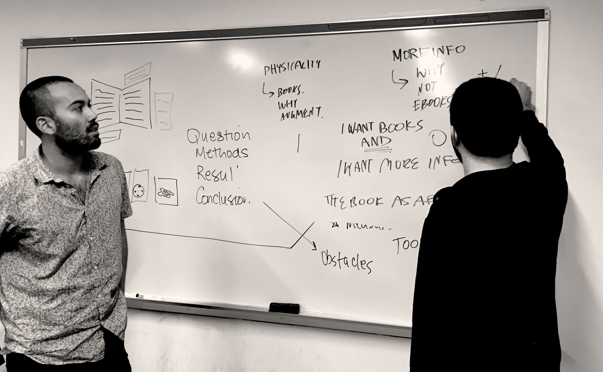
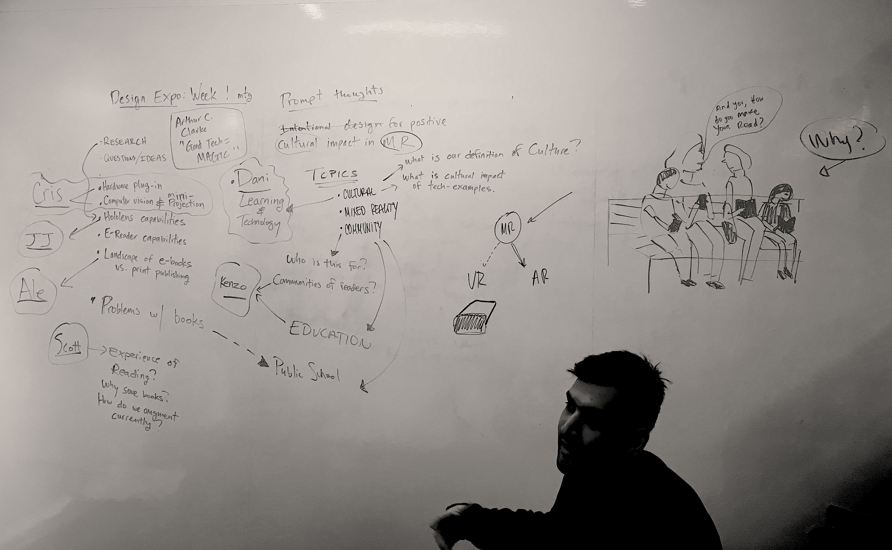
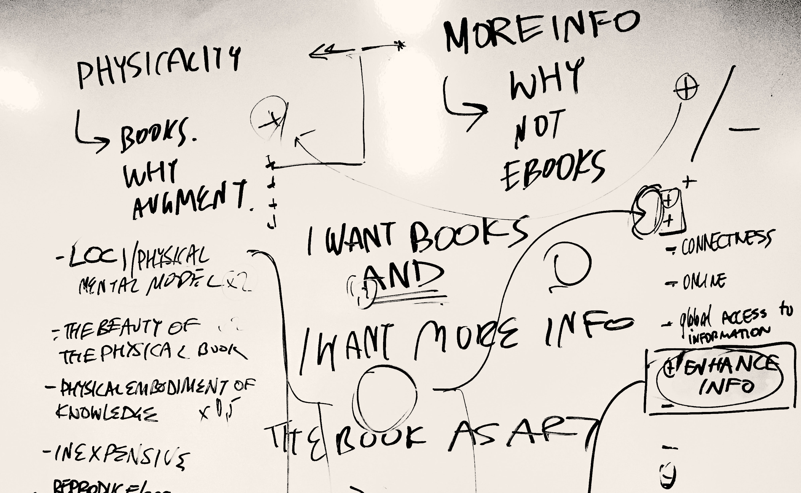
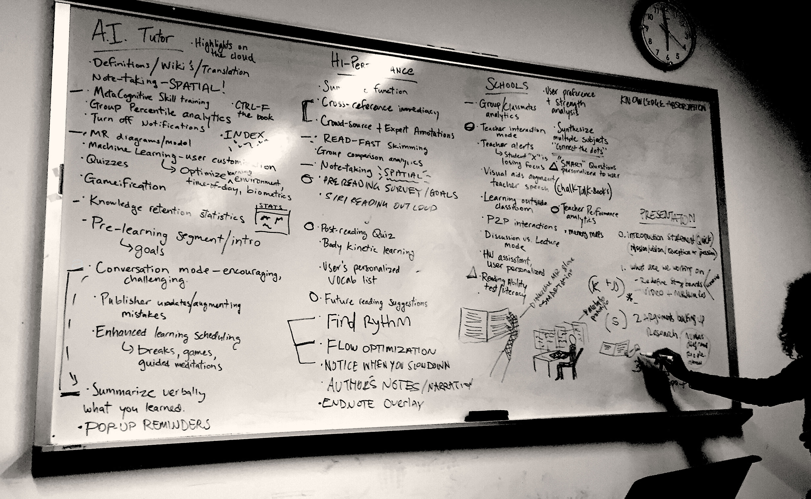
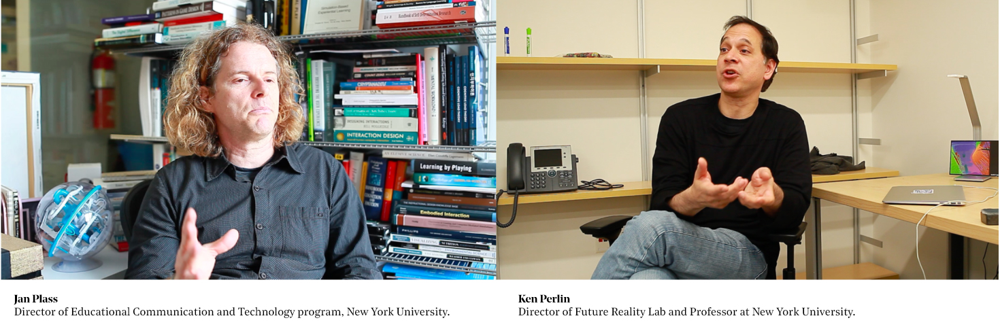

“What an astonishing thing a book is. It’s a flat object made from a tree with flexible parts on which are imprinted lots of funny dark squiggles. But one glance at it and you’re inside the mind of another person, maybe somebody dead for thousands of
years. Across the millennia, an author is speaking clearly and silently inside your head, directly to you. Books break the shackles of time. A book is proof that humans are capable of working magic."
―Carl Sagan
Re-imagine the future and potential of learning technologies. We are designing a mixed-reality tool that optimizes our experience learning from printed books. Our brains capabilities for attention and deep thinking are diminishing due to our increasingly
screen-based lives, and we envision this tool as part of the solution to that problem.
Just as an expert human tutor might, the technology we propose will understand both the book you are reading and your brain's behavior while learning,
guiding you through rich meaning making and discovery. In addition to conversing with your AI tutor, we see great opportunity in the realm of overlaid augmented content being produced by our developers, by book publishers, and by a community of
users.
0. INITIAL QUESTIONS/IDEAS
How do we create subtle interactive experiences with the analog printed word? How do we help preserve a place for books in our increasingly screen-based futures? This concept seeks to explore the intersection between current mixed reality technology and
the timeless experience of learning from books. We see this not as a animation-oriented feature that ‘brings to life’ a literary moment, but rather as a potential educational tool.


1.FIRST RESEARCH/EXPLORATION
We explored the many departments at NYU and the faculty in those departments that might be relevant to our project, then started doing research in those same fields, specifically: education, psychology, and neuroscience.
Kenzo (Psychology-new
methods to study cognitive psychology)
- How might this technology help cognitive psychologists better study the science of reading/learning? Scott (Education-Metacognition) - How interactive should learning be – when does it impair
or enhance cognition? - Teaching for metacognition could dramatically alter students’ deficiencies.
Juan Jose (Education & AR)
- Can we blend formal and informal learning spaces to create an environment of engaging continuous
learning? - The potential of trans-media storytelling, creating dynamic, team-based, collaborative problem solving, participatory environments that encourage exploration, examination, reasoning, debate and negotiation – vital skills in the
modern workplace and that of the future.
Daniella (Neuroscience)
- How information flows among broadly distributed brain regions involved in visual, phonological, and language processing to support reading? For optimal learning
to occur, the brain needs conditions under which it is able to change in response to stimuli (neuroplasticity) and able to produce new neurons (neurogenesis). The most effective learning involves recruiting multiple regions of the brain for the
learning task. These regions are associated with such functions as memory, the various senses, volitional control, and higher levels of cognitive functioning. “Reading is fascinating because it is a uniquely human skill. tacognitive skill (Dinsmore
et al., 2008, Veenman et al., 2006).
II. POSSIBLE SCENARIOS/STORYBOARDS
We decided on four possible scenarios, with different approaches in each case. Although we may end with a mixture of the features described in each one, these storyboards will help us define more accurately certain properties for specific groups.

III. STATING OUR MISSION AND VISION
Vision: To revolutionize the potential of learning technologies.
Mission: By designing the intersection of books, machine learning, and mixed reality.
Keywords: Books - MR - Learning/Metacognition
Vision Questions: - A book that can improve how we learn. - Are we getting dumber as tech is getting smarter? - 18% of the world’s population cannot read or write, 112 million youth globally are illiterate of which
60.7% are women. - A tool to aid and optimize learning-to revolutionize learning technologies. - Learn how to unlearn our limitations. Implement MR technology to transform how and how much we can learn from reading books. - Optimize
the process of human learning, with the ultimate goal of augmenting the timeless design of books with mixed reality technology.
IV. USER TESTING
We looked for users who have to consume large amounts of written content and decided to focus on students and lawyers Therefore we took a trip to NYU’S Bobst library so we could observe and speak to diverse students and ask them about their reading and
study habits Here’s some of what they said:
V. INITIAL PROTOTYPE + BRAINSTORMING
As we continued to brainstorm and sketch our possible design, we paired our research with our user interviews to start making low fi prototypes of interfaces, gestures, and features that they mentioned would be useful.
VI. DESIGN PROCESS + USER INTERFACE
Using everything we learned, we designed a suite of features that would help our users absorb and retain information they read and maintain the necessary focus for their learning session
AI Tutor a. Metacognitive skill training. b. MR diagrams / model - making map w/ fingers. c. Knowledge retention statistics - dashboard. d. Conversation mode - summarize verbally what you learned - quote bubblesl,
smart questions.
High Performance a. Immediate cross reference & crowd sourced + expert annotations - overlaid notes in a stack. b. Note taking - spatial. c. Flow optimization / find rhythm / notice when you slow down, you've got four
hours to crunch. d. Prereading / post reading quiz / future reading suggestions. e. Read - fast skimming.
Schools a. Group / classmates analytics - teacher POV shows realtime student's attention, like sims. b. Teacher interaction mode - teacher can take action based on analytics - dashboard. c. Connect the dots. d. Reading ability test literacy.

VII. RESEARCH INTERVIEWS + TECHNOLOGY
How interactive should this tool be? We met with NYU professors from computer science to education design, all of whom stress the importance of exploration for enabling students to best engage with their material.
Basically, there are two forms of thinking: divergent, where we follow a specific line of thought, and convergent - where we connect concepts. The brain is primarily a prediction machine, it learns best from another human being or interaction.

VIII. FINAL DESIGN
We see our tool as an app built on an existing hardware and software platforms that is functional with both existing and future books augmenting content could be produced by our own platform, by a community, and by book publishers themselves, community
and schools.
If you think about it, it was through books that we developed an appreciation for learning, for wondering, for asking the right questions that may lead to our own discoveries. Imagine a reality in which you optimize the true capabilities
of your mind. The implications of a deeper thinking society are extraordinary.
IX. DEMO
We see our tool as an app built on an existing hardware and software platforms that is functional with both existing and future books augmenting content could be produced by our own platform, by a community, and by book publishers themselves, community
and schools.
If you think about it, it was through books that we developed an appreciation for learning, for wondering, for asking the right questions that may lead to our own discoveries. Imagine a reality in which you optimize the true capabilities
of your mind. The implications of a deeper thinking society are extraordinary.